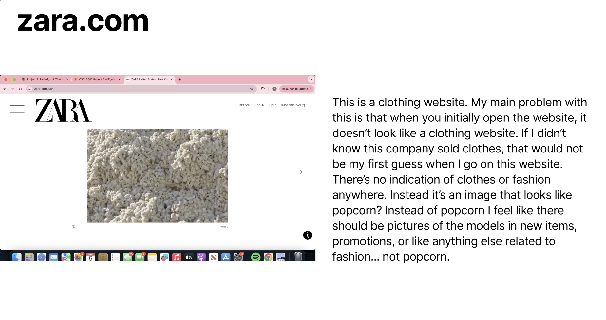

UI/UX Design Prototype for an Interactive Digital Platform
A redesign exercise focused on navigation, layout, and usability. I worked in Figma to build wireframes, visual components, and an interactive prototype that simulates how users move through the product.
Brief
The assignment was to take an existing digital platform and redesign it for a better user experience. I was allowed to pick the platform and the scope — so I framed the work around one specific question: where does this product lose people between wanting to do a thing and doing it?

Research & flows
I mapped the existing user flow end-to-end and noted every point where a user had to make a decision or wait for feedback. From there I built a short list of user stories the redesign needed to serve — and a shorter list of things I was deliberately choosing not to touch.
Wireframes
Low-fidelity first. I picked this layout since I wanted to match the original simplicity of the website, but make it more obvious .
Components & prototype
Once the direction was set, I built out the visual components — type scale, color, spacing, and the handful of components doing the most work. The prototype stitches them together so you can click through the core user journey end-to-end.
What I learned
This was the project that made me fall for Figma. More importantly, it's where the design ↔ build loop clicked for me — once I'd prototyped an interaction, I could feel whether it worked in a way I couldn't from a static mock. I leaned on that instinct in every project I built after.